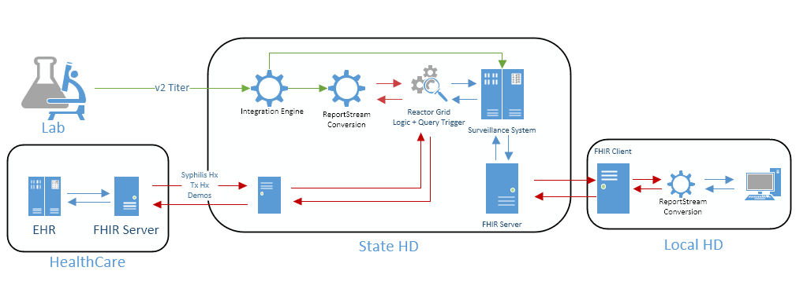
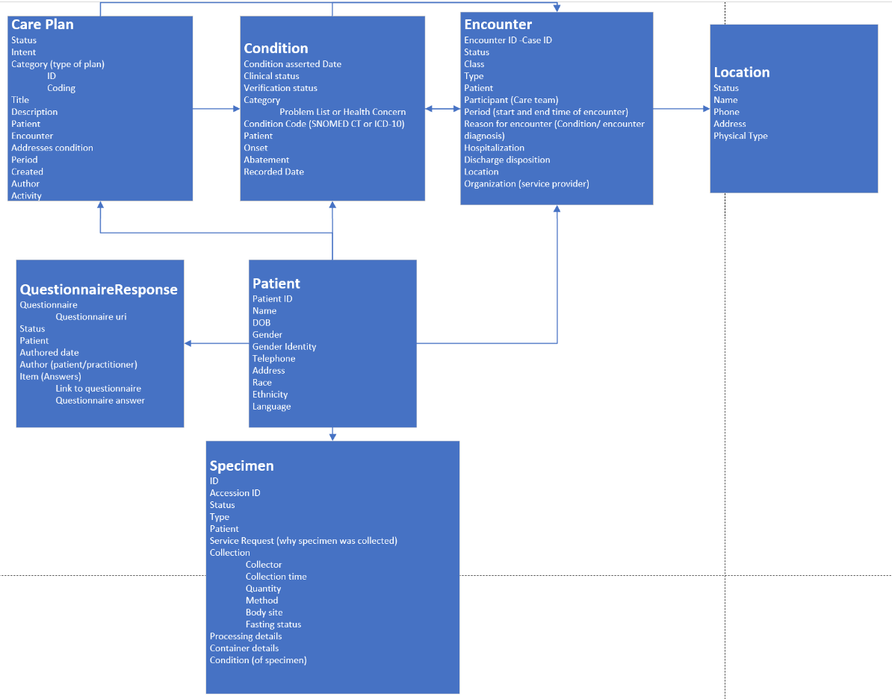

Sexually Transmitted Infections (STI) IG
0.1.0 - ci-build

Sexually Transmitted Infections (STI) IG
0.1.0 - ci-build

Sexually Transmitted Infections (STI) IG - Local Development build (v0.1.0). See the Directory of published versions
| Official URL: http://example.org/ImplementationGuide/fhir-sti | Version: 0.1.0 | |||
| Draft as of 2023-07-28 | Computable Name: fhirsti | |||
The Sexually Transmitted Infections (STI) Fast Healthcare Interoperability Resources (FHIR)implementation guide (IG) explains how to represent and exchange sexually transmitted infection data in a standardized way that can potentially scale across the United States.
The exchange of STI data is critical in public health for several reasons. STIs (Sexually Transmitted Infections), also known as sexually transmitted diseases (STDs), are infections that are primarily spread through sexual contact. STIs can also be spread through the sharing of needles or other injection drug use equipment. Some STIs can also be transmitted from mother to child during pregnancy, childbirth, or breastfeeding.
There are many different types of STIs caused by bacteria, viruses, and parasites, and they can affect both men and women. Some common types of STIs include chlamydia, gonorrhea, syphilis, herpes, human papillomavirus (HPV), and HIV.
STIs pose a significant health threat and can have serious consequences if left untreated. The transmission of STIs can lead to infertility, increased risk of certain types of cancer, and even death. By sharing STI data, public health officials can track the prevalence of STIs and identify patterns in their transmission, enabling them to develop effective prevention and treatment strategies.
The exchange of STI data is also important in reducing the stigma surrounding these infections. Many people who are infected with STIs feel ashamed or embarrassed and may be reluctant to seek medical care. By sharing data and educating the public about STIs, public health officials can reduce the stigma surrounding these infections and encourage people to seek appropriate care. This can help to prevent the spread of STIs and improve the health outcomes of those who are infected.
Exchanging STI data can help to inform public policy and resource allocation. For example, data on STI rates among certain populations can inform the development of targeted prevention and treatment programs for those populations. STI data can also help to identify areas with higher rates of infection, enabling public health officials to allocate resources more efficiently to address these areas. In this way, the exchange of STI data can help to improve the effectiveness and efficiency of public health interventions.
Overall, the exchange of STI data is critical in protecting public health and improving the lives of individuals who are affected by these infections. It allows public health officials to develop targeted prevention and treatment strategies, reduce stigma, and ultimately reduce the spread of STIs in communities.
A FHIR IG for exchanging STI data is necessary to ensure that STI data is exchanged in a standardized and consistent manner across different healthcare systems and organizations. This FHIR IG provides a set of rules and guidelines for how STI data should be structured and exchanged, allowing healthcare systems to easily and accurately exchange this information.

Figure 1.1: Potential syphilis use case implementation
The tracking of STI data has been an important aspect of public health for several decades. The need for STI data tracking stems from the recognition that STIs are a significant public health problem, with millions of new cases diagnosed every year worldwide. STIs can have serious health consequences if left untreated, and can also increase the risk of HIV transmission.
The earliest efforts to track STI data in the United States date back to the early 20th century, when public health officials began collecting data on syphilis and gonorrhea cases. In the 1930s and 1940s, the U.S. government established STI reporting systems to track the incidence of syphilis and gonorrhea. Over time, the scope of STI data tracking expanded to include other infections, such as chlamydia, herpes, and human papillomavirus (HPV).
Today, the tracking of STI data is an essential component of public health efforts to prevent and control STIs. STI data is used to monitor disease trends, identify high-risk populations, and develop prevention and treatment strategies. By tracking STI data, public health officials can identify areas where interventions are needed and evaluate the effectiveness of STI prevention and control programs.
A FHIR IG is necessary to ensure that STI data is exchanged in a standardized and consistent manner across different healthcare systems and organizations using FHIR. The FHIR IG provides a set of rules and guidelines for how STI data should be structured and exchanged, allowing healthcare systems to easily and accurately exchange this information.
Without a standardized IG for exchanging STI data, there may be inconsistencies in how data is collected, stored, and transmitted across different healthcare systems and organizations. This can make it difficult to accurately track STI rates and patterns of transmission, hindering the development of effective prevention and treatment strategies.
By implementing a FHIR IG for STI data exchange, healthcare systems and organizations can ensure that they are collecting and exchanging data in a standardized and consistent manner. This can improve the accuracy and reliability of STI data, allowing public health officials to develop more effective prevention and treatment strategies. Additionally, a standardized implementation guide can help to reduce the time and resources needed to exchange STI data, making it easier for healthcare providers to collaborate and share information.
The audience for this STI IG is primarily healthcare systems, organizations, and providers that collect, store, and exchange STI data. This may include public health departments, healthcare providers, health information exchanges, and electronic health record (EHR) vendors.
Public health departments is a key audience for a FHIR STI IG, as they are responsible for tracking and managing STI data at the population level. A standardized IG can help public health departments to more accurately track STI rates and patterns of transmission, enabling them to develop effective prevention and treatment strategies.
Healthcare providers, including doctors, nurses, and other clinical staff, would also be a key audience for this IG. These providers are often responsible for collecting and transmitting STI data for their patients. A standardized implementation guide can help to ensure that this data is collected and transmitted in a consistent and standardized manner, reducing the risk of errors and inconsistencies in the data.
Finally, EHR vendors and health information exchanges would also be an important audience. These organizations are responsible for developing and managing the technology platforms that healthcare providers use to store and transmit patient data. A standardized implementation guide can help to ensure that these platforms are compatible with each other and can exchange STI data in a consistent and standardized manner.
This Guide is divided into several pages which are listed at the top of each page in the menu bar.
| Term | Definition |
|---|---|
| Business case | A business case summarizes the scope of information exchange covered by the IG. |
| Use case | A use case is a list of technical actions or event steps typically defining the interactions between a role and a system to achieve a goal. The actor can be a human or other external system. Technical scenarios that describe systems interactions between technical actors to implement the business case. |
| Sexually transmitted infections | Sexually transmitted infections (STIs), also known as sexually transmitted diseases (STDs), are infections that are primarily spread through sexual contact. Some common types of STIs include chlamydia, gonorrhea, syphilis, herpes, human papillomavirus (HPV), and HIV. |
This implementation guide relies on the following other specifications:

| Name of Profile | Short description | Based On | |
|---|---|---|---|
| 1 | STI Care Plan | This profile defines constraints that represent the information needed to exchange a care plan for sexually transmitted infections. |
US Core Care Plan |
| 2 | STI Encounter | This profile defines constraints that represent encounters relating to sexually-transmitted infections. |
US Core Encounter |
| 3 | STI Location | This profile defines constraints that represent locations where sexually transmitted infection encounters occur. |
US Core Location |
| 4 | STI Patient | This profile defines constraints that represent a sexually transmitted infection patients. |
US Core Patient |
| 5 | STI Specimen | This profile defines constraints that represent a sexually transmitted infection specimen. |
US Core Specimen |
A table providing a mapping sexually transmitted infection data to fields in the respective US Core profiles is provided in the narrative pages for the following profiles: